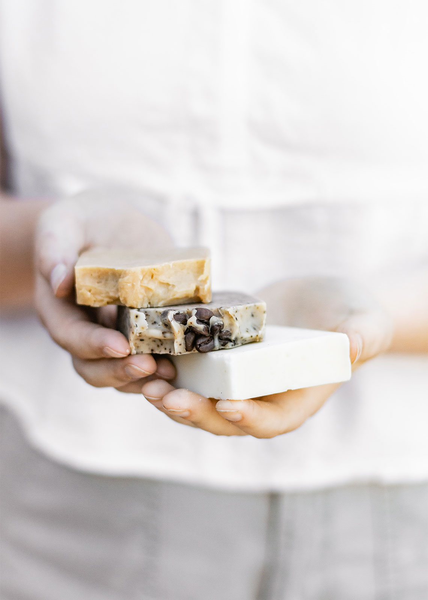

La Boîte à Savons : Une entreprise d'ici
La Boîte à Savons est une savonnerie artisanale située au cœur du village de Kamouraska, dans le Bas-du-Fleuve. Depuis sa fondation en 2004, le Quai des Bulles a su se tailler une place de choix dans le milieu des cosmétiques naturels. Tous les produits proposés chez nous sont faits à la main, sur place, par une équipe passionnée. La diversité de nos produits, la qualité et la sobriété de ceux-ci font notre réputation.
Notre mission demeure sans compromis: fabriquer des produits cosmétiques de haute qualité, de façon artisanale et écologique, à partir d’ingrédients naturels et biodégradables. Nous nous positionnons dans le marché grâce à nos démarches à forte valeur ajoutée: la recherche de principes actifs d’origine végétale et la formulation de produits naturels haut de gamme destinés aux soins du corps. Nous choisissons avec soin des ingrédients simples et naturels qui confèrent une qualité supérieure au produit fini. Nous faisons partie de ces PME innovantes, œuvrant en amont des grandes marques et contribuant au retour en force des produits naturels.
Parce que la qualité de nos produits est la clé de voûte de notre entreprise, nous choisissons d’en maîtriser totalement la fabrication. Saponification, extraction, macération, filtration, concentration: tous les procédés utilisés sont contrôlés et obéissent à des protocoles stricts de fabrication. Désireux d’aller jusqu’au bout de notre engagement, nous choisissons d’intégrer toutes les étapes de la création d’un produit et intervenons à chaque maillon de la chaîne, depuis la sélection des matières jusqu’au produit fini. Nous sommes en mesure par la suite de bien informer le principal intéressé: le consommateur.
Outre l’expérience ultime de profiter des bienfaits de nos produits, l’expérience client est au cœur de nos préoccupations. En effet, chaque membre de notre équipe demeure à l’écoute de vos besoins afin de bien vous conseiller et vous orienter vers les produits qui vous conviennent. Une visite de notre savonnerie artisanale et de notre atelier vous permet de discuter avec nos artisans et d’en apprendre davantage sur les secrets de la fabrication de nos produits.
Merci à notre fidèle clientèle qui ne cesse de croître, et ce depuis nos tout débuts. Bienvenue chez nous!